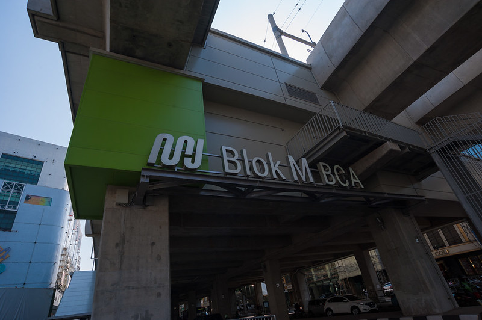

Surviving vs. Living in Jakarta
I often tell my friends that it’s cheap to survive in Jakarta but expensive to live here. A cup of coffee can cost you half an hour to two hours of work if you’re earning minimum wage, and the majority of people here make even less than that. Compare that to Tokyo, where you’d only have to work 12 to 30 minutes for the same coffee. In a city as expensive as Jakarta, public transportation is crucial for the middle and lower classes (myself included). I’d even argue that the upper class should be just as invested in it.
My Passion for Public Transportation
If you know me, you know I never shut up about how public transport could save Jakarta. Maybe I’ve even encouraged you to try the KRL, MRT, TJ, or MikroTrans once or twice. There are two main reasons I’m so passionate about this: First, using public transport has helped me both financially and mentally. Second, I’ve noticed a lot of organic pop culture in Jakarta, which I believe is largely thanks to easy access via public transport. And if you know me, you know I’m a big fan of pop culture.
The True Cost of Driving in Jakarta
I won’t lie—I still drive when I have to (it’s practically impossible not to in Indonesia). But here’s the thing: I hate driving in Jakarta because it’s ridiculously expensive and downright stressful! There are countless hidden costs, from parking to gas to maintenance, and the roads are a nightmare. You can be stuck in traffic for two hours, and it’s just another Tuesday evening. Compare that to my experience using public transport for my commute: A TransJakarta trip still costs IDR 3500, the same as in 2004 (though I wouldn’t be mad if they raised it). If you use MikroTrans, it’s free. Rail-based transport is also much cheaper than driving daily. KRL charges IDR 3000 for the first 25 km and IDR 1000 for every 10 km after that, while the MRT, the most expensive option, costs up to IDR 14,000. You don’t have to be a math genius to see that public transport is way cheaper than driving. Plus, you get to skip the headache of finding and paying for parking, avoid traffic jams, and catch up on your reading list while you’re at it.
Public Transport and the Revival of Jakarta’s Pop Culture
Now, onto my second point. Since the MRT station was built in Blok M, the area has become a hub for pop culture in Indonesia. You’ve got hip spots like Mbloc, ramen joints, and coffee shops galore. Blok M was the entertainment and pop culture center in the ’80s and ’90s, but it lost its buzz over time. When I was in junior high, Blok M was where I’d go to catch a movie without the long queues. In 2019, when MRT Jakarta began operations, Blok M slowly started returning to its former glory as the hub of pop culture in Jakarta. Today, you can find everything from a free library and city park (Taman Literasi) to record stores, concert halls, nightclubs, and restaurants offering a range of prices and cuisines—all thanks to better connectivity. Blok M isn’t the only area where public transit has sparked organic pop culture. In Dukuh Atas, where the MRT, LRT, TransJakarta, and KRL intersect, a trend called “Citayem Fashion Show” emerged. Young people from across Jabodetabek (mainly Depok, hence the name Citayem) gather to showcase their fashion on the sidewalks of Sudirman Street. While some people, especially the upper-middle class, find this trend cringy, I see it as an expression of freedom. Witnessing these cultural phenomena makes me wonder: What would happen if Jakarta were even more connected? What kind of music would take off? What food trends would emerge? Could it even help bridge the gap between social classes as we all experience the same culture?
The Reality: Room for Improvement
Let’s be real here—I’m talking like Jakarta has the best public transit in the world, but honestly, I’d only give it a 5 out of 10 (and that’s me being biased). There’s a lot of room for improvement. Buses are unreliable (you could wait 40 minutes), buses and trains are overcrowded, the MRT only has one line, and the LRT is too small for the average Jakartan. But we can help improve things by using public transport and encouraging others to do the same. Public transportation is a matter of political will—more people using it means more incentive for the government to improve the system. And with a better transit system, even more people will hop on board, creating a cycle of continuous improvement.